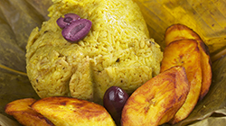
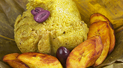
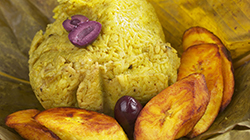

La zona de la selva del Perú tiene una gran biodiversidad en fauna, por lo cual es tradicional el consumo de variados tipo de carne como la huangana; especie de chancho silvestre, el suri, roedores como el majaz, añuje y sachacuy, armadillo, tortuga terrestre, monos, entre otros. Entre la diversa variedad de animales destaca el paiche, que es el segundo pez más grande de agua dulce, llegando a pesar hasta 3000 kilos y puede llegar a medir 2.5 metros de largo. Los platos más conocidos de la selva peruana son el juane y el tacaco con cecina; también existen otros platos de bastante consumo como el inchicapi, la patarashca y la ensalada de chonta.

La comida de la selva peruana tiene como elementos populares, entre otros, un aderezo básico que es conocido como misto o mishkina, el ingiri; especie de plátano verde sancochado, el consumo de frutas y la cocción de las carnes, especialmente peces y también juane; el cual se envuelve en hojas de Bilbao que es una palmera que cuenta con un aroma particular. Las carnes son usualmente aportadas por la cacería, la pesca y la ganadería. Entre las especies de frutas que brinda la selva del Perú destaca el camu camu; fruta que contiene cuarenta veces más vitamina C que el kiwi, destaca tambien el aguaje; del cual se prepara un refresco llamado aguajina, con alto contenido de vitamina A.
Comida Peruana
Cocina Perú
Lima Delivery